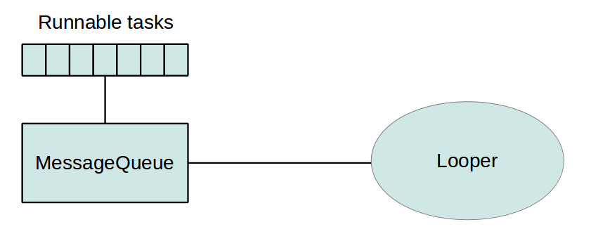

Proceses & Threads
Android Programming
Nitya Narasimhan
References
Android Developers Website
Commonsware Tutorials
#1.1 Processes & Threads
- Basic units of execution
- Process is self-contained ( = 1 per VM)
- Thread is lightweight process (= many per Process)
- Enable concurrent operations (= time-slicing)
- Process starts 'main' thread (which can spawn more)
Java Tutorials Reference
#1.2 Process vs. Thread

Processes execute programs.
Threads execute tasks within process.
Operating Systems Article (UIUC)
#1.3 In Android
- App runs in a single 'VM' process (default)
- Components runs in a single thread (main or UI)
- Can request different processes (via manifest)
- Can spawn new threads within process
#1.4 Process Lifecycle
Importance hierarchy decides termination order
Process rank set by its highest-utility component
- Foreground process (highest utility)
- Visible process
- Service process
- Background process
- Empty process (lowest utility)
#1.5 Android UI Thread
All Apps run on single (main or UI) thread by default
- No separate thread for component
- Event queue to handle callbacks
- Don't Block UI thread => ANR error
- Don't Update UI from worker => Not thread safe
#1.6 Worker Threads
Don't block UI thread => Use workers for long ops
/*
* Solves our UI thread blocking issue.
* But note that we violate Rule #2 by
* updating UI from the worker thread
*/
public void onClick(View v) {
new Thread(new Runnable() {
public void run() {
Bitmap b = loadImageFromNetwork("http://example.com/image.png");
mImageView.setImageBitmap(b);
}
}).start();
}
Android Guides Reference
#1.7 Worker Threads
Don't update UI from worker thread => Post a message
public void onClick(View v) {
new Thread(new Runnable() {
public void run() {
final Bitmap bitmap = loadImageFromNetwork("http://example.com/image.png");
mImageView.post(new Runnable() {
public void run() {
mImageView.setImageBitmap(bitmap);
}
});
}
}).start();
} Also look at Activity.runOnUiThread(Runnable),
View.post(Runnable) and View.postDelayed(Runnable, long)
Android Guides Reference
#1.8 Handlers & Loopers
Loopers handle message queues for a thread
Handlers receive messages, run code to handle them
- Create Handler (for new threads)
- Attach Handler (to existing threads)
- Handler runs in same thread as Looper
- .handleMessage() defines actions done
See ThreadSample.zip example ( tutorial)
Android Guides Reference
#1.8 Handlers & Loopers
Loopers handle message queues for a threadThe Looper.getMainLooper() is attached to UI thread

Vogella Tutorials: Android Background Processing
#1.9 The AsyncTask
Simplify short asynchronous interactions with UI
Removes need to write explicit threads/handlers code
Leverages background thread pool for efficiency
- Subclass AsyncTask
- Implement task as doInBackground() callback
- Implement onPostExecute() to update UI
- Invoke async task by calling execute() on it
#1.10 How AsyncTask Works
3 Generic Types ==> Params, Progress, Result
4 Steps => onPreExecute(), doInBackground(), onProgressExecute(), onPostExecute()
- Params = type of data sent (at execution)
- Progress = type of data published (during execution)
- Result = type of data returned (on completion)
- Use "Void" for unused types
#1.11 How AsyncTask Works
3 Generic Types ==> Params, Progress, Result
4 Steps => onPreExecute(), doInBackground(), onProgressExecute(), onPostExecute()
- onPreExecute = on UI Thread (setup)
- doInBackground(Params) = run worker thread (run)
- onProgressUpdate(Progress) = on UI Thread (update)
- onPostExecute(Result) = on UI Thread (done)
#1.12 AsyncTask Example
/* In your app component, instantiate and execute the task */
public void onClick(View v) {
new DownloadImageTask().execute("http://example.com/image.png");
}
/* The task automatically manages worker thread creation and interactions
* with the UI thread e.g., to update progress or display end result
*
* Note: In this example
* Params = a String (provided above as a URL string)
* Progress = Void (indicates no progress data is published)
* Result = Bitmap (note that the mImageView set runs on UI thread)
*/
private class DownloadImageTask extends AsyncTask {
/** The system calls this to perform work in a worker thread and
* delivers it the parameters given to AsyncTask.execute() */
protected Bitmap doInBackground(String... urls) {
return loadImageFromNetwork(urls[0]);
}
/** The system calls this to perform work in the UI thread and delivers
* the result from doInBackground() */
protected void onPostExecute(Bitmap result) {
mImageView.setImageBitmap(result);
}
} Android Guides Reference
#1.13 ThreadSample App
Services & Alarms
Processes & Threads
#1.14 Muzei App
Showcases Activity, Service, Receiver, Thread, AsyncTask, Provider..
Currently built using Gradle (Android Studio)
- Video: DevBytes: Effortless Scalability
- GitHub: Muzei Repo
- Store: Muzei App